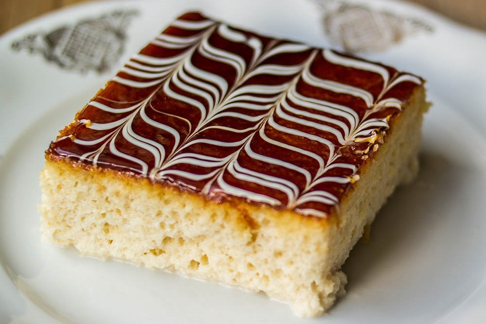

Trileçe

 Wikipedia
Wikipedia
Trileçe, 1930'lardan itibaren Meksika'da yaygınlaşan ve tüm dünyaya yayılan bir sütlü tatlıdır. Trileçe ismi İspanyolca'da "üç" ve "süt" anlamına gelen "tres" ve "leches" kelimelerinden türemiştir. Hazırlanışı esnasında üç farklı süt ürünü kullanıldığı için bu adı almıştır
kaç kişilik : 4 kişi
Hazırlanış süresi : 4-5 Saat
Pişirme süresi : 20-25 dk
Wikipedia